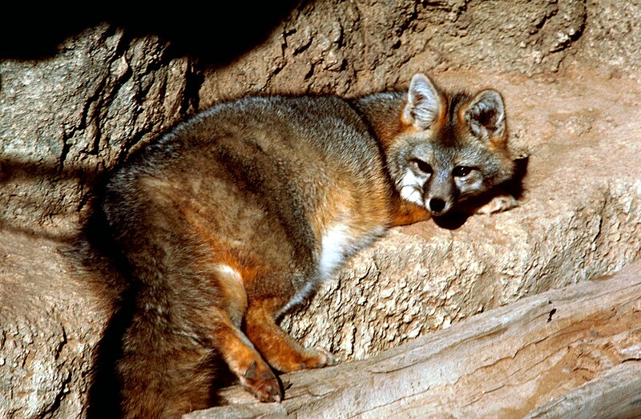

ZORRO

- < El tamaño es similar al del coyote, pero sería difícil confundir estos animales entre sí. El zorro gris tiene el hocico más corto y agudo, las orejas más desarrolladas y las patas proporcionalmente más cortas. La cola es larga y espesa, muy poblada. El pelaje es gris oscuro o plateado en el dorso, volviéndose rojizo en los flancos y las patas y blanco en el vientre. Una banda de pelo negro cruza el cuerpo desde la nuca a la punta de la cola, siguiendo todo el lomo del animal. Los carrillos y garganta son blancos, y se aprecian dos rayas finas de pelo negro que parten desde los ojos hacia atrás.
pagina principal